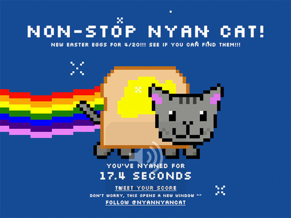

Nyan Cat | 2011
Press the picture!
What is it?
Nyan cat is a Youtube video that is combined with a song "Nyanyanyanyanyanyanya!" by Niconico user "Daniwell" and also a gif drew by Christopher Torres on his website. The cat's body is a cherry Pop-Tart and it's flying in the outer space with rainbows behind it.
